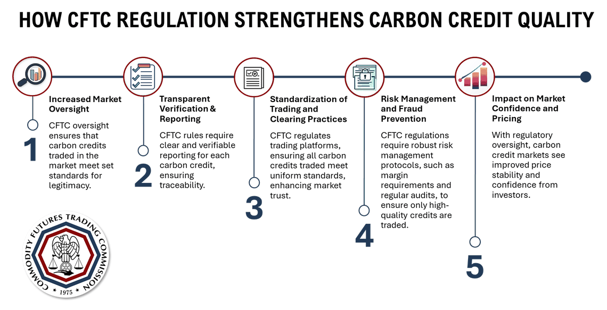

Energy Transition Watch: CFTC Tightens Oversight of Carbon Credits
From Credit to Credibility: What the the New Framework Means for CRE
On September 20th, 2024, the U.S. Commodity Futures Trading Commission (CFTC) released its long-awaited guidance for voluntary carbon credit (VCC) derivatives markets [1]. While the technical language addresses derivatives trading, the broader significance of this move lies in what it signals to global markets: credibility, not just carbon, is the new compliance currency.
For commercial real estate (CRE) investors, the development tightens the link between carbon strategy, regulatory transparency, and financial exposure.
From Credit to Credibility: Why This Matters for CRE
Voluntary carbon credits are a useful (although often misused) tool in decarbonization. Until now, the absence of unified oversight has led to inconsistent quality, with credits frequently criticized for overstated claims, weak verification, or short-lived impact.
The CFTC’s framework addresses these problems head-on by applying the same discipline to carbon markets that governs traditional commodities. For CRE leaders relying on offsets to close Scope 1, 2, or 3 emissions gaps, that shift carries direct implications.
CFTC's Carbon Oversight Framework
To support credibility, the CFTC has introduced a five-point structure to improve market integrity, ensure transparency, and establish legal accountability in carbon credit derivatives trading.
The five priorities include:
- Standard Definitions: Establish clear terms for voluntary carbon credits and derivatives.
- Disclosure Rules: Mandate what market participants must report.
- Anti-Fraud Enforcement: Apply existing rules to carbon-related misconduct.
- Verification Standards: Support third-party assurance and registry transparency.
- Market Surveillance: Monitor liquidity, pricing, and position limits to prevent abuse.
These mechanisms bring carbon credits under the same scrutiny as financial commodities - effectively bridging environmental integrity with market legitimacy.

What It Means for Commercial Real Estate
For CRE investors, especially those with U.S. operations or globally diversified portfolios, the CFTC's guidance delivers three critical benefits:
- Reduces greenwashing risk: Carbon credits must now meet higher verification and disclosure standards.
- Enhances offset value: Buyers can rely more confidently on credits that represent real, additional, and permanent emissions reductions.
- Aligns with investor expectations: Institutional LPs are increasingly asking not just whether carbon is offset, but how.
As CFTC Chair Rostin Behnam put it, “Our focus on risk mitigation and price discovery positions us at the nexus of financial markets and decarbonization efforts.” [1]
A Global Market Shift Is Underway
Although US-based, the CFTC’s move complements broader global reforms. In Europe, the EU Emissions Trading System (ETS) and ETS 2 are ramping up carbon pricing pressure on CRE portfolios. While ETS governs compliance-grade emissions, many firms still turn to voluntary offsets to support residual emissions claims.
Going forward, only high-integrity credits will carry reputational and regulatory weight. Market participants should expect harmonization across major regulatory regimes, meaning:
- Cross-border CRE investors will need consistent carbon procurement frameworks.
- Carbon credits will increasingly resemble regulated financial products.
- Sustainability disclosures will become subject to audit-level scrutiny.
Investor Actions: Credibility is Capital
This is a moment for real estate investors to recalibrate their decarbonization strategy with more rigor and less risk. Key actions include:
- Audit your offset portfolio: Reassess each credit for additionality, permanence, and independent verification.
- Upgrade sourcing policies: Align procurement with CFTC standards and similar EU benchmarks.
- Disclose transparently: Ensure offset use is backed by traceable, reportable data.
- Combine credits with real reductions: Treat offsets as supplements, not substitutes, for operational decarbonization.
In a tightening regulatory landscape, transparency becomes a source of investor advantage.
Final Word: The Carbon Markets Are Growing Up

The CFTC’s oversight is more than technical regulation. It represents a turning point for carbon finance and sustainability claims across sectors.
For CRE investors, this means that carbon offsets are no longer a side note. They are a regulated, material component of ESG strategy. Those who embrace the new standards will not only stay ahead of compliance, but also win trust from tenants, investors, and regulators.
In carbon markets, as in real estate, value is built on solid foundations. The time to fortify is now.
[1] Commodity Futures Trading Commission, "CFTC Approves Final Guidance Regarding the Listing of Voluntary Carbon Credit Derivative Contracts", Sept 2024